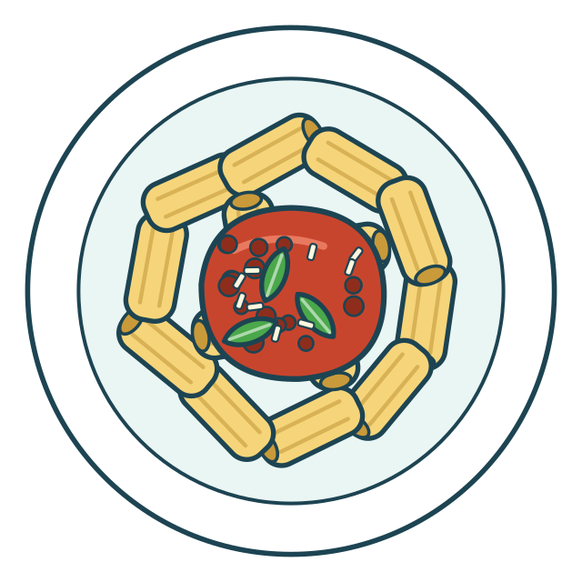

.png)

Almuerzo
Pasta a la boloñesa
- Tiempo2 h 10 min
- Rinde4 porciones
- DificultadFácil
Ingredientes
Salsa
- 500 g de carne molida
- 2 cebollas
- 2 zanahorias
- 1 rama de apio
- 2 tomates (tipo pera)
- 50 ml de vino blanco
- 200 ml de agua
- 1 cucharada de pasta de tomate
Pasta y final
- 320 g de rigatoni (unos 80 g por persona)
- Queso parmesano rallado
- Sal y pimienta
- Albahaca fresca para decorar
Preparación
- Pica fino la cebolla, la zanahoria y el apio, y sofríelos en una sartén amplia.
- Añade la carne molida y cocínala hasta que cambie de color.
- Incorpora los tomates picados y sigue cocinando.
- Agrega el vino blanco y revuelve; luego añade el agua y la pasta de tomate.
- Cocina la salsa a fuego lento hasta que espese. La elaboración completa ronda las 2 horas.
- Mientras tanto, cuece la pasta en abundante agua con sal.
- Escurre la pasta, pásala a la salsa con medio cucharón del agua de cocción y saltea hasta que termine de cocerse y la salsa vuelva a espesar.
- Sirve de inmediato con parmesano, albahaca y un poco de pimienta.
Consejos
- Usa pasta corta y hueca, como rigatoni o penne: atrapa mejor la salsa.
- La salsa está lista cuando es más carne con tomate que líquido.
- Reserva un poco del agua de cocción de la pasta: ayuda a ligar la salsa.
Receta adaptada de Directo al Paladar. Texto reescrito y cantidades tomadas de la fuente.